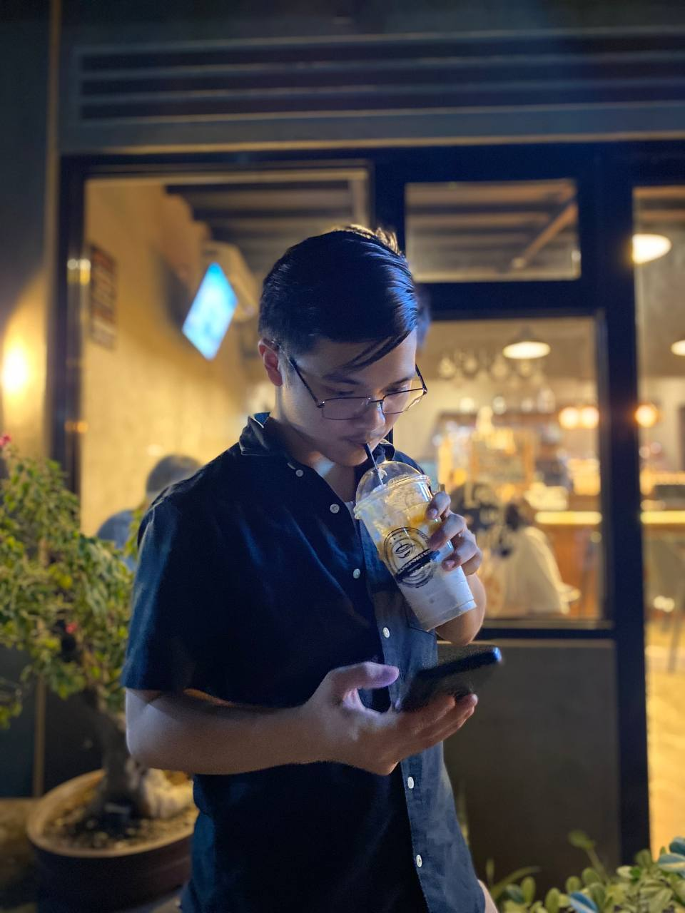

Home
Welcome to my portfolio
A place where I'll show you who I am and what projects I have created!
About Me

My name is Marco Andrei L. Aydalla. I'm 19, Turning 20 next February. Studying in FEU Tech, focusing on BSIT-AGD. 1st Year turning 2nd Year.
My hobbies are gaming, music, and reading mangas or comics that interest me. Picking this course has been a blast; I've learned many things within this course. Not only that, I've also earned new friendships and such.